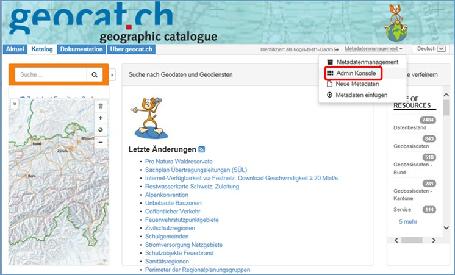
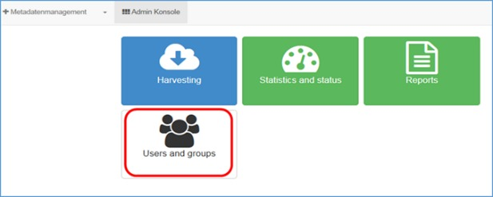
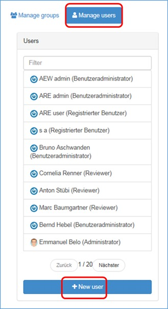
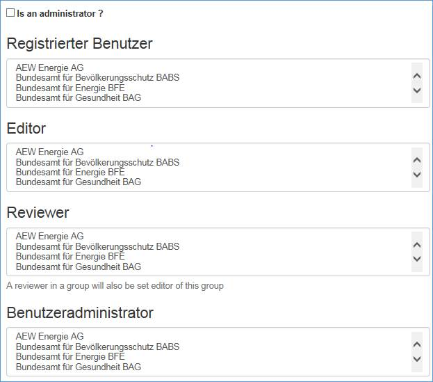
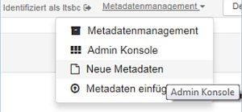
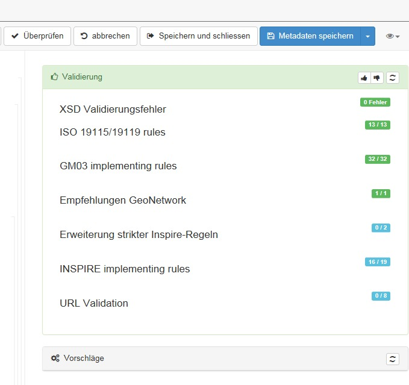
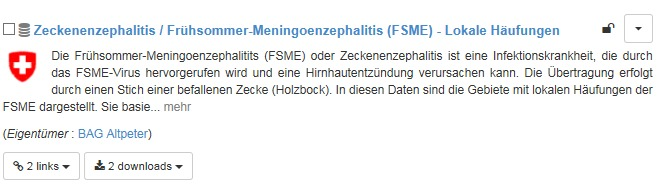
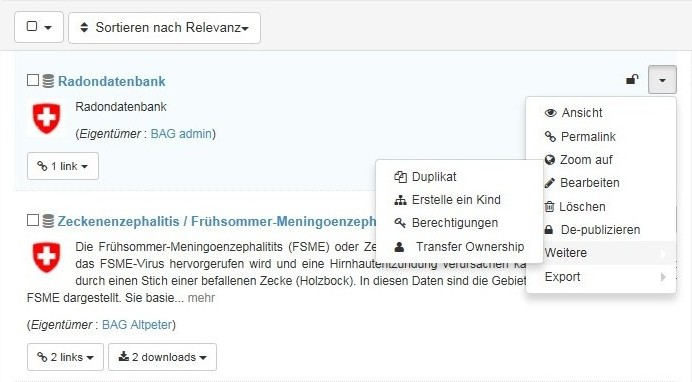

Im Folgenden ist das Vorgehen beschrieben, wie valide Datensätze in geocat.ch erstellt werden, um sie anschliessend auf dem opendata-Portal zu publizieren.
Um Geodaten auf dem Portal opendata.swiss zu publizieren, müssen die Metadaten der betroffenen Daten zuerst im Katalog für Geometadaten geocat.ch publiziert werden. Von dort werden die benötigten Attribute dann durch einen automatisierten Prozess ins opendata-Portal überführt.
1. Anmeldung bei geocat.ch
Um auf geocat Metadaten zu publizieren, müssen zwei Kriterien erfüllt sein, die der Benutzer nicht selber einrichten kann, und die er somit durch die Administratoren von geocat.ch beantragen muss:
Gruppe, welche für die zu publizierenden Daten zuständig ist (z. Bsp. ein Kanton, ein Bundesamt etc.)
- Falls die Gruppe noch nicht in geocat.ch besteht, bitte Angaben zur Gruppe (genauer Name in den drei Landessprachen und Englisch, sowie ein Logo) per Mail an geocat@swisstopo.ch schicken.
Benutzerkonto
Um dies einzurichten, bitte eine E-Mail an geocat@swisstopo.ch senden und Kontaktangaben zur Person (Name, Vorname und E-Mail) nennen. Für jede Gruppe wird durch die Administratoren von geocat.ch ein Konto eingerichtet, welches die Rechte eines „Benutzeradministrators“ hat. Diese Rolle berechtigt dazu, selber neue Benutzerkonten in der eigenen Gruppe einzurichten.
Ein Benutzeradmin kann wie folgt Benutzer einrichten:
1) Einloggen und unter „Metadatenmanagement“ auf „Admin Konsole“ klicken:

2) Auf der folgenden Seite „Users and groups“ anklicken:

3) Im folgenden Fenster „Manage users“, anschliessend „+ New user“ anklicken:

Anschliessend müssen die Rechte zugeordnet werden.
Folgende Benutzertypen bestehen in geocat.ch:
- „Registrierter Benutzer“: Benutzer kann Metadaten nicht bearbeiten/löschen, aber alle Metadaten der eigenen Gruppen sehen, auch die nicht publizierten
- „Editor“: Benutzer kann Metadaten der Gruppe bearbeiten, löschen, neu erstellen, jedoch nicht publizieren
- „Reviewer“: Benutzer kann Metadaten der Gruppe bearbeiten, löschen, neu erstellen und publizieren
- „Benutzeradministrator“: Benutzer kann neue Benutzerkontos einrichten und ist unsere Ansprechperson für betroffene Gruppe
„Is an administrator“ bitte nicht anwählen.

Sobald diese beiden Voraussetzungen erfüllt sind, kann der eingeloggte Benutzer selbständig Metadaten erfassen.
2. Gibt es schon ein Metadatensatz in geocat.ch oder nicht?
JA: In vielen Fällen besteht bereits ein Metadatensatz in geocat.ch. Dieser muss einfach noch um die OGD-spezifischen Attribute angereichert werden. In diesem Fall bitte gleich zu Punkt 3 weitergehen.
NEIN: Besteht noch kein Metadatensatz, muss dieser neu erfasst werden. Dazu muss der Benutzer eingeloggt sein und auf Metadatenmanagement > „Neue Metadaten“ klicken:

Auf der folgenden Seite „Erstelle einen…“ Datensatz anklicken und das Template „opendata.swiss“ auswählen. Anschliessend müssen (mindestens) die für einen Metadateneintrag obligatorischen Elemente ausgefüllt werden, plus zusätzlich die in Punkt 3 beschriebenen OGD-spezifischen Attribute.
Obligatorisch für einen validen Metadatensatz gemäss ISO-Standard sind:
- Titel
- Datumsangabe
- Sprache
- Kurzbeschreibung
- Thematik (Kategorie)
- Ausdehnung
- Metadatenkontakt
3. Ein Datensatz, der auf dem OGD-Portal publiziert wird, muss folgende Attribute enthalten:
| Name Attribut in geocat.ch | Bemerkungen |
|---|---|
| Metadatensatzidentifikator | wird automatisch generiert |
| Titel | In deutsch und französisch |
| Alternativtitel | In deutsch und französisch |
| Datum | als Rolle “Publikation” wählen; es können mehrere Daten im Metadatensatz angegeben warden (Rollen: “Erstellung”, „Überarbeitung“, „Publikation“), für die Publikation in OGD wird jedoch nur das zuerst erfasste übernommen. |
| Kontakt für die Ressource | Als Rolle „Publisher“ wählen (korrekt? Im Moment häufig „Verantwortliche Stelle“). Optional können weitere Kontakte erfasst werden. |
| Thematik | Es muss eine Thematik ausgewählt werden. Handelt es sich um einen Geobasisdatensatz, muss dieselbe Thematik vergeben werden wie in der Sammlung der Geobasisdatensätze vorgesehen. |
| Sprache | Sprache, in der die Dokumentation zum Datensatz vorliegen |
| Digitale Transferoption |
Es muss ein Link auf eine „landing page“ erstellt werden (= Informationsseite zum Datensatz). Dies geschieht über das Protokoll:
|
| Digitale Transferoption |
Es **muss** mindestens eine (es dürfen aber auch mehrere) digitale Transferoption ausgewählt werden mit mindestens einem der folgenden Protokolle:
|
| Schlüsselwörter | opendata.swiss ist obligatorisch (löst das Harvesting des Metadatensatzes aus); weitere Schlüsselwörter sind fakultativ |
| Ausdehnung > zeitliche Ausdehnung | Falls der Datensatz zeitlich begrenzte Gültigkeit aufweist, kann dies über die Zeitliche Ausdehnung erfolten: Ausdehnung > „Nicht-geographischen Extent hinzufügen“ > zeitliche Ausdehnung > Zeitperiode > Beginn und Endzeitpunkt erfassen |
4. Folgende Attribute sollten erfasst sein: : s. Mapping: alles, was optional!
5. Metadaten validieren
Um den erstellten Metadatensatz zu validieren, muss dieser im Bearbeitungsmodus geöffnet werden. In der Menüzeile auf „Überprüfen“ klicken. Gibt es keine Fehlermeldung betreffend…
- XST
- ISO 19115
- GM03
- GeoNetwork
…so ist der Metadatensatz valide. Ansonsten müssen angezeigte Fehler korrigiert werden.

6. Metadaten publizieren
Ob ein Datensatz in geocat.ch publiziert ist, kann an dem kleinen Schloss abgelesen werden. Ist es offen, ist der Datensatz publiziert.

Um einen Datensatz zu publizieren, entweder…
-
auf das geschlossene Schloss klicken, oder…
-
den kleinen Menüpfeil anwählen, dort „weitere“ und anschliessend „Berechtigungen“ anklicken:

Anschliessend den Datensatz für „alle“ freigeben.